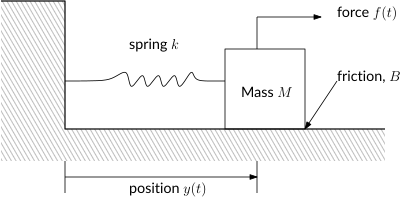

6 Linear Time Invariant CT Systems
Today’s topic is our introduction to CT systems and the important case of CT Linear, Time-Invariant Systems.
6.1 System types
A system is an interconncted set of components or sub-systems. Mathematically a system is a transformation, \(T\), between one or more signals, a rule that maps functions to functions.
single input - single output (SISO) system.
SISO Block Diagram single input - multiple output (SIMO) system
SIMO Block Diagram general case, multiple input - multiple output (MIMO)
MIMO Block Diagram
We will focus on single input - single output, CT and DT systems.
If both input and output are CT signals, it is a CT system.
Generic Block Diagram of CT System If both input and output are DT signals, it is a DT system.
Generic Block Diagram of a DT System If input and output are not both CT or DT signals, it is a hybrid CT-DT system.
Generic Block Diagram of a Hybrid DT/CT System Generic Block Diagram of a Hybrid CT/DT System
As a shorthand notation for the graphical description above we can use \(x \mapsto y\). A system maps a function \(x\) to a function \(y\):
CT system \[x(t) \mapsto y(t)\]
DT system \[x[n] \mapsto y[n]\]
Hybrid CT-DT system \[x[n] \mapsto y(t)\]
or
\[x(t) \mapsto y[n]\]
When a system has no input, the system is autonomous. An autonomous system just produces output: \(\mapsto y\).
We can think of an autonomous system as a function generator, producing signals for use, or as modeling a measurement process.
6.2 CT system representations
We can mathematically represent, or model, systems multiple ways.
purely mathematically - in time domain we will use
for CT systems: linear, constant coefficient differential equations. e.g. \[y^{\prime\prime} + ay^\prime + by = x\]
for DT systems: linear, constant coefficient difference equation, e.g. \[y[n] = a y[n-1] + b y[n-2] + x[n]\]
or
for CT systems: CT impulse response
for DT systems: DT impulse response
purely mathematically - in frequency domain we will use
frequency response
transfer function (complex frequency, covered in ECE 3704)
graphically, using a mixture of math and block diagrams
Mathematical models:
provide abstraction, removing (often) irrelevant detail.
can be more or less detailed, an internal v.s. external (block box) description
are not unique with respect to instantiation (implementation)
are limited to the regime they were designed for
Example
Consider the RC circuit. It is a single input - single output system. We will be able to represent it mathematically or graphically and internally or externally.
External - Graphical
External Model External - Symbolic
\(y(t) = h(t)*x(t)\)
Internal - Graphical
Internal Model Internal - Symbolic
\(y^\prime + \frac{1}{RC} y = \frac{1}{RC} x(t)\)
Note: internal models usually have several paramters (the resistor and capacitor values in the example above), while the external model does not. Thus another term for external model is a lumped parameter model.
It does not matter what the underlying system implementation is. For example, consider a mechanical system, described by a second-order ODE:

| \(y\) = position | \(M\) = mass |
| \(y^\prime\) = velocity | \(K\) = spring constant |
| \(y^{\prime\prime}\) = acceleration | \(B\) = coefficient of friction |
\[y^{\prime\prime} + \frac{B}{M} y^\prime + \frac{K}{M}y = \frac{1}{M}f(t)\]
Compare this to the parallel RLC circuit, described by the second-order ODE:
| \(y\) = voltage | \(R\) = resistance |
| \(Cy^\prime\) = capacitor current | \(L\) = inductance |
| \(C\) = capacitance |
\[y^{\prime\prime} + \frac{1}{RC} y^\prime + \frac{1}{LC}y = \frac{1}{LC}f(t)\]
Comparing these systems, if \(R = \frac{1}{B}\), \(L = \frac{1}{K}\), and \(C = M\), they are mathematically identical.
6.3 System properties and classification
Choosing the right kind of system model is important. Here are some important properties that allow us to broadly classify systems.
Memory
Invertability
Causality
Stability
Time-invariance
Linearity
Let’s define each it turn.
6.3.1 Memory
The output of a system with memory depends on previous or future inputs and is said to be dynamic. Otherwise the system is memoryless or instantaneous, and the output \(y(t)\) at time \(t\) depends only on \(x(t)\). For example in CT: \[y(t) = 2x(t)\] is a memoryless system, while \[y(t) = \int\limits_{-\infty}^{t} x(\tau) \; dt\] has memory.
6.3.2 Invertability
A system is invertable if there exists a system that when placed in series with the original recovers the input. \[x(t) \mapsto{T} y(t) \mapsto{T^{-1}} x(t)\] where \(T^{-1}\) is the inverse system of \(T\). For example, consider a system \[x(t) \mapsto y(t) = \int\limits_{-\infty}^t x(\tau) \; d\tau\] and a system \[y(t) \mapsto z(t) = \frac{dy}{dt}\] The combination in series \(x(t) \mapsto y(t) \mapsto z(t) = x(t)\), i.e. the derivative undoes the integral.
6.3.3 Causality
A CT system is causal if the output at time \(t\) depends on the input for time values at or before \(t\): \[y(t) \;\text{depends on}\; x(\tau) \;\text{for} \; \tau \leq t\] All physical CT systems are causal, even if all continuous systems are not (e.g. continuous 2D images \(f(u,v)\), have no "before" and "after").
For example, consider a CT system whose impulse response is \(h(t) = e^{-t^2}\). This implies the system produces output before (i.e. for \(t < 0\)) the impulse is applied at \(t=0\), somehow anticipating the arrival of the impulse. Barring time-travel, this is physically impossible.
6.3.4 Stability
A CT system is (BIBO) stable if applying a bounded-input (BI) \[\left|x(t)\right| < \infty \; \forall \; t\] results in a bounded-output (BO) \(x(t) \mapsto y(t)\) and \[\left|y(t)\right| < \infty \; \forall \; t\] Note, bounded in practice is limited by the physical situation, e.g. positive and negative rails in a physical circuit.
For example, a CT system described by the LCCDE \[\frac{dy}{dt}(t) - 2y(t) = x(t)\] is unstable because the solution \(y(t)\) will have one term of the form \(Ce^{2t}\), for most non-zero inputs \(x(t)\) or any non-zero initial condition, that grows unbounded as time increases.
6.3.5 Time-invariance
A CT system is time-invariant if, given \[x(t) \mapsto y(t)\] then a time-shift of the input leads to the same time-shift in the output \[x(t-\tau) \mapsto y(t-\tau)\]
An important counterexample is a CT system described by a LCCDE, e.g. \[\frac{dy}{dt}(t) + y(t) = x(t)\] but non-zero auxillary conditions at some \(t_0\), \(y(t_0) = y_0 \neq 0\). Such systems will have a term in its solution that depends on \(y_0\). However if I time shift the input, the term that depends on \(y_0\) does not shift (since it is anchored to \(t_0\)) and the total output does not shift identically with the input. Thus the system cannot be time-invariant.
6.3.6 Linearity
A CT system is linear if the output due to a sum of scaled individual inputs is the same as the scaled sum of the individual outputs with respect to those inputs. In other words given \[x_1(t) \mapsto y_1(t) \;\text{and}\; x_2(t) \mapsto y_2(t)\] then \[a x_1(t) + b x_2(t) \mapsto a y_1(t) + b y_2(t)\] for constants \(a\) and \(b\). Note this property extends to sums of arbitrary signals, e.g. if \[x_i(t) \mapsto y_i(t) \; \forall\; i \in [1 \cdots N]\] then given \(N\) constants \(a_i\), if the system is linear \[\sum\limits_{i = 1}^N a_i x_i(t) \mapsto \sum\limits_{i = 1}^N a_i y_i(t)\] This is a very important property, called superposition, and it simplifies the analysis of systems greatly.
Similar to time-invariance an important non-linear system is that is described by a LCCDE with non-zero auxillary conditions at some \(t_0\), \(y(t_0) = y_0\). Again such systems will have a term in it’s solution that depends on \(y_0\). Given two inputs, each individual response will have that term in it, so thier sum has double that term. However the response due to the sum of the inputs would again only have one and the sum of the responses would not be the same as the response of the sum. Such a system cannot be linear.
6.4 Stable LTI Systems
The remainder of this course is about stable, linear, time-invariant (LTI) systems. As we have seen in CT such systems can be described by a LCCDE with zero auxillary (initial) conditions (the system is at rest).
We have seen previously how to find the impulse response, \(h(t)\), of such systems. We now note some relationships between the impulse response and the system properties described above.
If a system is memoryless then \(h(t) = C \delta(t)\) for some constant \(C\).
If a system is causal then \(h(t) = 0\) for \(t < 0\).
If a system is BIBO stable then \[\int\limits_{-\infty}^{\infty} |h(t)| \; dt < \infty\]